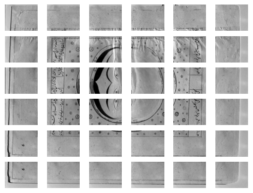

from fairdatanow import DataViewer
import osExploring your remote data in a breeze
Instantly find and access all your Nextcloud data files
In order to to make use of fairdatanow, you will need a Nextcloud server url, a user name and a password to access a folder on a Nextcloud server. The recommended way to use these credentials in Jupyter notebooks is to store username and password as environment variables on your system. You can retrieve them with the os.getenv() function. In this way you avoid typing them directly in the notebook, which is not save if you need to share these notebooks with others…
To get started you need to import the DataViewer class from the package and instantiate it with the Nextcloud configuration dictionary. Depending on the amount of files in the cloud storage it might take some time to build the interactive file table. In this example we want to create a table for 8118 files (and counting) from the Falnama project which takes about 12 seconds.
Given the complete overview of all data files in a project, you typically want find a subset of files for inspection further exploration. As an example let’s try to inspect the Infrared Reflectography (IRR) image tiles that were taken from page 71803-01 depicting the Moon. In order to filter these 6x6 specific image files (and exclude the .extra folder we need to use the following regular expression search pattern: '(?!.*\\.extra).*IRR-tiles.*Moon'.
configuration = {
'url': "https://laboppad.nl/falnama-project",
'user': os.getenv('NC_AUTH_USER'),
'password': os.getenv('NC_AUTH_PASS')
}filters = {'columns': ['path', 'size', 'modified', 'ext'],
'extensions': ['.tif'],
'search': '(?!.*\\.extra).*IRR-tiles.*Moon',
'show_directories': False,
'show_filters': False,
'use_regex': True}dv = DataViewer(configuration, **filters)dvBelow the filtered file table one can see that we have selected exactly 36 files out of 8118 files in the Nextcloud storage.
Note
Note that in this documentation interactivity is limited. In a Jupyter notebook you can adjust this selection.
We can now download these files into a cache folder on your local computer in order to process them further. This can be done easily with the .download_filtered() method.
files = dv.download_filtered()Ready with downloading 36 selected remote files to local cache: /home/frank/.cache/fairdatanow The file paths can now be inspected:
files['/home/frank/.cache/fairdatanow/falnama-project/07. Results/09. IRR/IRR-tiles/71803-01_IRR 1600 nm/71803-01_Moon_IR tiles_0063.tif',
'/home/frank/.cache/fairdatanow/falnama-project/07. Results/09. IRR/IRR-tiles/71803-01_IRR 1600 nm/71803-01_Moon_IR tiles_0064.tif',
'/home/frank/.cache/fairdatanow/falnama-project/07. Results/09. IRR/IRR-tiles/71803-01_IRR 1600 nm/71803-01_Moon_IR tiles_0065.tif',
'/home/frank/.cache/fairdatanow/falnama-project/07. Results/09. IRR/IRR-tiles/71803-01_IRR 1600 nm/71803-01_Moon_IR tiles_0066.tif',
'/home/frank/.cache/fairdatanow/falnama-project/07. Results/09. IRR/IRR-tiles/71803-01_IRR 1600 nm/71803-01_Moon_IR tiles_0067.tif',
'/home/frank/.cache/fairdatanow/falnama-project/07. Results/09. IRR/IRR-tiles/71803-01_IRR 1600 nm/71803-01_Moon_IR tiles_0068.tif',
'/home/frank/.cache/fairdatanow/falnama-project/07. Results/09. IRR/IRR-tiles/71803-01_IRR 1600 nm/71803-01_Moon_IR tiles_0069.tif',
'/home/frank/.cache/fairdatanow/falnama-project/07. Results/09. IRR/IRR-tiles/71803-01_IRR 1600 nm/71803-01_Moon_IR tiles_0070.tif',
'/home/frank/.cache/fairdatanow/falnama-project/07. Results/09. IRR/IRR-tiles/71803-01_IRR 1600 nm/71803-01_Moon_IR tiles_0071.tif',
'/home/frank/.cache/fairdatanow/falnama-project/07. Results/09. IRR/IRR-tiles/71803-01_IRR 1600 nm/71803-01_Moon_IR tiles_0072.tif',
'/home/frank/.cache/fairdatanow/falnama-project/07. Results/09. IRR/IRR-tiles/71803-01_IRR 1600 nm/71803-01_Moon_IR tiles_0073.tif',
'/home/frank/.cache/fairdatanow/falnama-project/07. Results/09. IRR/IRR-tiles/71803-01_IRR 1600 nm/71803-01_Moon_IR tiles_0074.tif',
'/home/frank/.cache/fairdatanow/falnama-project/07. Results/09. IRR/IRR-tiles/71803-01_IRR 1600 nm/71803-01_Moon_IR tiles_0075.tif',
'/home/frank/.cache/fairdatanow/falnama-project/07. Results/09. IRR/IRR-tiles/71803-01_IRR 1600 nm/71803-01_Moon_IR tiles_0076.tif',
'/home/frank/.cache/fairdatanow/falnama-project/07. Results/09. IRR/IRR-tiles/71803-01_IRR 1600 nm/71803-01_Moon_IR tiles_0077.tif',
'/home/frank/.cache/fairdatanow/falnama-project/07. Results/09. IRR/IRR-tiles/71803-01_IRR 1600 nm/71803-01_Moon_IR tiles_0078.tif',
'/home/frank/.cache/fairdatanow/falnama-project/07. Results/09. IRR/IRR-tiles/71803-01_IRR 1600 nm/71803-01_Moon_IR tiles_0079.tif',
'/home/frank/.cache/fairdatanow/falnama-project/07. Results/09. IRR/IRR-tiles/71803-01_IRR 1600 nm/71803-01_Moon_IR tiles_0080.tif',
'/home/frank/.cache/fairdatanow/falnama-project/07. Results/09. IRR/IRR-tiles/71803-01_IRR 1600 nm/71803-01_Moon_IR tiles_0081.tif',
'/home/frank/.cache/fairdatanow/falnama-project/07. Results/09. IRR/IRR-tiles/71803-01_IRR 1600 nm/71803-01_Moon_IR tiles_0082.tif',
'/home/frank/.cache/fairdatanow/falnama-project/07. Results/09. IRR/IRR-tiles/71803-01_IRR 1600 nm/71803-01_Moon_IR tiles_0083.tif',
'/home/frank/.cache/fairdatanow/falnama-project/07. Results/09. IRR/IRR-tiles/71803-01_IRR 1600 nm/71803-01_Moon_IR tiles_0084.tif',
'/home/frank/.cache/fairdatanow/falnama-project/07. Results/09. IRR/IRR-tiles/71803-01_IRR 1600 nm/71803-01_Moon_IR tiles_0085.tif',
'/home/frank/.cache/fairdatanow/falnama-project/07. Results/09. IRR/IRR-tiles/71803-01_IRR 1600 nm/71803-01_Moon_IR tiles_0086.tif',
'/home/frank/.cache/fairdatanow/falnama-project/07. Results/09. IRR/IRR-tiles/71803-01_IRR 1600 nm/71803-01_Moon_IR tiles_0087.tif',
'/home/frank/.cache/fairdatanow/falnama-project/07. Results/09. IRR/IRR-tiles/71803-01_IRR 1600 nm/71803-01_Moon_IR tiles_0088.tif',
'/home/frank/.cache/fairdatanow/falnama-project/07. Results/09. IRR/IRR-tiles/71803-01_IRR 1600 nm/71803-01_Moon_IR tiles_0089.tif',
'/home/frank/.cache/fairdatanow/falnama-project/07. Results/09. IRR/IRR-tiles/71803-01_IRR 1600 nm/71803-01_Moon_IR tiles_0090.tif',
'/home/frank/.cache/fairdatanow/falnama-project/07. Results/09. IRR/IRR-tiles/71803-01_IRR 1600 nm/71803-01_Moon_IR tiles_0091.tif',
'/home/frank/.cache/fairdatanow/falnama-project/07. Results/09. IRR/IRR-tiles/71803-01_IRR 1600 nm/71803-01_Moon_IR tiles_0092.tif',
'/home/frank/.cache/fairdatanow/falnama-project/07. Results/09. IRR/IRR-tiles/71803-01_IRR 1600 nm/71803-01_Moon_IR tiles_0093.tif',
'/home/frank/.cache/fairdatanow/falnama-project/07. Results/09. IRR/IRR-tiles/71803-01_IRR 1600 nm/71803-01_Moon_IR tiles_0094.tif',
'/home/frank/.cache/fairdatanow/falnama-project/07. Results/09. IRR/IRR-tiles/71803-01_IRR 1600 nm/71803-01_Moon_IR tiles_0095.tif',
'/home/frank/.cache/fairdatanow/falnama-project/07. Results/09. IRR/IRR-tiles/71803-01_IRR 1600 nm/71803-01_Moon_IR tiles_0096.tif',
'/home/frank/.cache/fairdatanow/falnama-project/07. Results/09. IRR/IRR-tiles/71803-01_IRR 1600 nm/71803-01_Moon_IR tiles_0097.tif',
'/home/frank/.cache/fairdatanow/falnama-project/07. Results/09. IRR/IRR-tiles/71803-01_IRR 1600 nm/71803-01_Moon_IR tiles_0098.tif']Let’s create a plot to see what they look like…
import matplotlib.pyplot as pltfig, axs = plt.subplots(nrows=6, ncols=6)
axs = axs.flatten()
for ax, file in zip(axs, files):
im = plt.imread(file)
ax.imshow(im, cmap='Greys_r')
ax.axis('off')
FUNCTIONS
DataViewer
DataViewer (configuration, subdir=None, verify=True, **params)
Create connection with a Nextcloud server and list the contents of a folder.
to_iframe
to_iframe (obj, html_filename, height='500px')
*Save panel-like object as full HTML page html_filename in notefolder.
In this way it should be possible to preserve rich interactive visualizations directly in web pages.
See: https://panel.holoviz.org/reference/panes/HTML.html#html-documents*